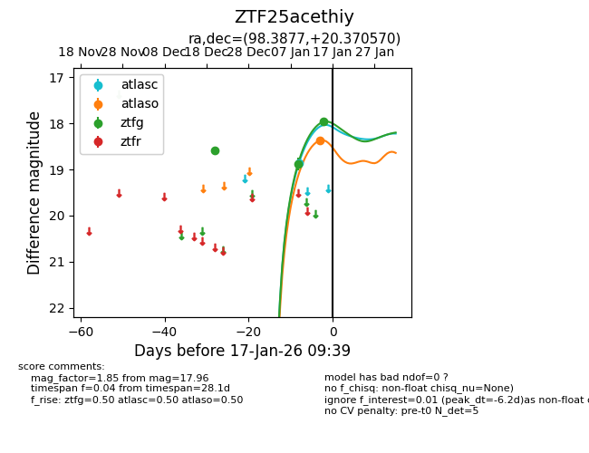
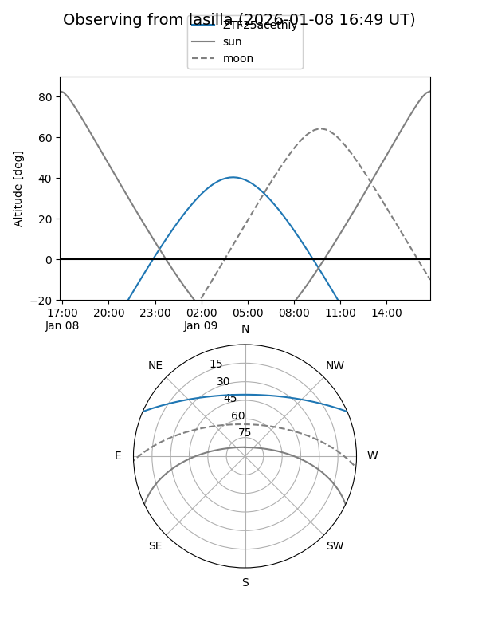
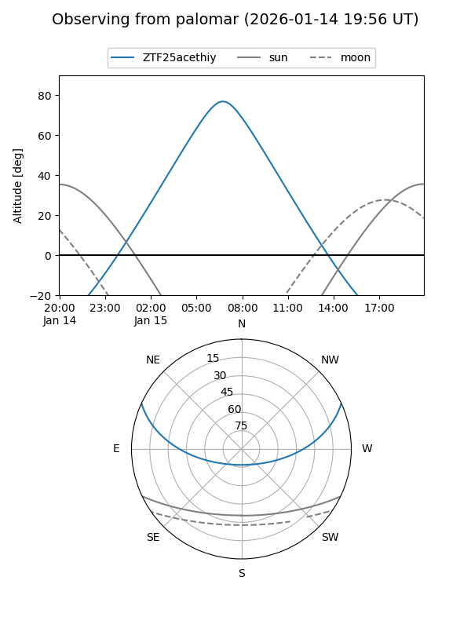
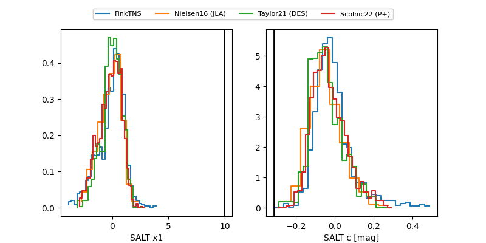

ZTF25acethiy
Target ZTF25acethiy at 2026-01-09 07:25
Aliases and brokers:
FINK:
Lasair:
ALeRCE:
alt names
ZTF25acethiy (ztf,fink_ztf)
Coordinates:
equatorial (ra, dec) = 98.3875,+20.37088
equatorial (HMS+DMS) = 06:33:33.01,+20:22:15.17
galactic (l, b) = (192.7717,+5.37494)
Flags:
Photometry:
last ztfg=18.88
2 ztfg detections
Lightcurve

Visibility


Additional plots
